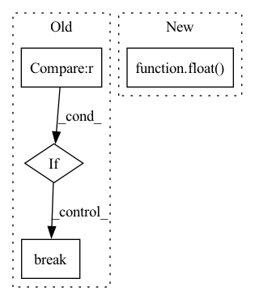

Pattern ID :29176
Before Change
"training_time": time_elapsed,
}, is_best)
// stop training once reach desired accuracy
if args.desired_acc and best_acc1 >= args.desired_acc :
mins, secs = divmod(time_elapsed, 60)
hrs, mins = divmod(mins, 60)
print("Reached acc of: {:6.2f}\n"
"Time elapsed: {:.2f} hrs {:.2f} mins {:.2f} secs | {:.2f} secs\n"
"Total // epoches: {:.2f}\n"
"// of train steps per epoch: {:.2f}\n"
"// of val steps per epoch: {:.2f}\n"
"Length of trainset: {:.2f}\n"
"Length of valset: {:.2f}\n".format(
best_acc1,
hrs, mins, secs, time_elapsed,
epoch + 1,
len(train_loader),
len(val_loader),
len(train_dataset),
len(val_dataset)
))
break
def train(train_loader, model, criterion, optimizer, epoch, gpu, args):
batch_time = AverageMeter("Time", ":6.3f")After Change
criterion = nn.CrossEntropyLoss().cuda(gpu)
// Scale learning rate based on global batch size
args.lr = args.lr * float( args.batch_size * args.ngpus_per_node * args.world_size) / 256.
optimizer = torch.optim.SGD(model.parameters(), args.lr,
momentum=args.momentum,In pattern: SUPERPATTERN
Frequency: 3
Non-data size: 4
Instances Fragment ID: 85896031
Project Name: richardkxu/distributed-pytorch
Commit Name: b5d0793a1bac4df6a31ab0dd1959baee4ab12809
Time: 2020-02-06
Author: richardkxu@gmail.com
File Name: imagenet_ddp_mixprec.py
M Class Name: AnonimousClass
N Class Name: AnonimousClass
M Method Name: main_worker(2)
N Method Name: main_worker(3)
M Parent Class:
N Parent Class:
M File Name: imagenet_ddp_mixprec.py
N File Name: imagenet_ddp_mixprec.py
M Start Line: 93
M End Line: 255
N Start Line: 106
N End Line: 226
Before Change
dataiter = iter(dataloader)
images, labels = dataiter.next()
for i, data in enumerate(dataloader, 0):
inputs, labels = data
inputs, labels = inputs.to(device), labels.to(device)
print("Input:", inputs.shape)
outputs = model(inputs)
print("model out:", outputs.shape)
if i == 1 :
break
// print labels
//print(" ".join("%5s" % classes[labels[j]] for j in range(4)))
After Change
// print accuracy for each class
for classname, correct_count in correct_pred.items():
accuracy = 100 * float( correct_count) / total_pred[classname]
print("Accuracy for class {:5s} is: {:.1f} %".format(classname,
accuracy))
Fragment ID: 85896032
Project Name: loretoparisi/hf-experiments
Commit Name: 286971f578836b95fec5d7123b3b23cd5fa01603
Time: 2021-05-11
Author: loretoparisi@gmail.com
File Name: src/mlpvision/train.py
M Class Name: AnonimousClass
N Class Name: AnonimousClass
M Method Name: test(5)
N Method Name: test(4)
M Parent Class:
N Parent Class:
M File Name: src/mlpvision/train.py
N File Name: src/mlpvision/train.py
M Start Line: 156
M End Line: 176
N Start Line: 158
N End Line: 192
Before Change
// 初始化一个用于存放模型翻译结果句子单词的列表
translation = []
// 遍历翻译输出字符的下标（注意：开始符"BOS"的索引0不遍历）
for j in range(1, out.size(1)):
// 获取当前下标的输出字符
sym = data.cn_index_dict[out[0, j].item()]
// 如果输出字符不为"EOS"终止符，则添加到当前句子的翻译结果列表
if sym != "EOS" :
translation.append(sym)
// 否则终止遍历
else:
break
// 打印模型翻译输出的中文句子结果
print("translation: %s" % " ".join(translation))
After Change
break
res = [res]
bleu = sacrebleu.corpus_bleu(trg, res)
return float( bleu.score)
def test(data, model, criterion):
Fragment ID: 85896033
Project Name: hemingkx/chinesenmt
Commit Name: 9adf53cb6d9b875c9d173643a8d266d49d6f90eb
Time: 2020-12-15
Author: hemingkx@gmail.com
File Name: train.py
M Class Name: AnonimousClass
N Class Name: AnonimousClass
M Method Name: evaluate(2)
N Method Name: evaluate(2)
M Parent Class:
N Parent Class:
M File Name: train.py
N File Name: train.py
M Start Line: 53
M End Line: 84
N Start Line: 67
N End Line: 95